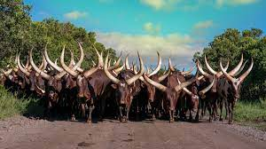
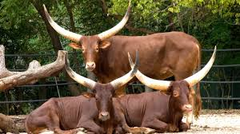
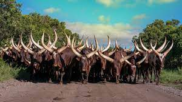
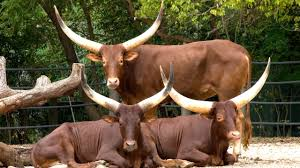

Ankole Cattle, whose origins can be traced back all the way to Ancient Egypt thanks to their presence in hieroglyphics from the period The Ankole-Watusi is a modern American breed of domestic cattle. It derives from the Ankole group of Sanga cattle breeds of east and central Africa. It is characterized by very large horns.
They are also considered to be a yardstick for warriors and wee also considered as a beautiful divine incarnation. The cattle is reared for both milk and meat purposes although the skin can also be used for making cultural regalia like drums, stools, sandals and clothing.
| COMMERCIAL | WEIGHT | AVERAGE | HIGHEST | STOCK AVAILABLE |
|---|---|---|---|---|
| Cow in Calf | R 8 000 | R 15 000 | 25 | |
| Calf | 574lbs | R 11 000 | R 25 750 | 10 |
| Heifer | 564lbs | R 11 500 | R 40 400 | 10 |
| Heifer in Calf | 555lbs | R 11 200 | R 60 000 | 9 |
 


